สไลด์ต้นฉบับของตอนนี้ (หน้า 17–23, 26 และ 50)


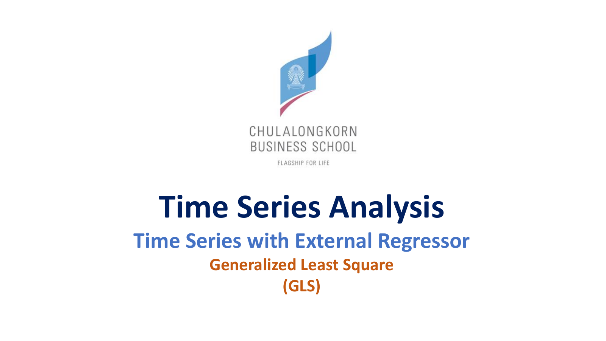

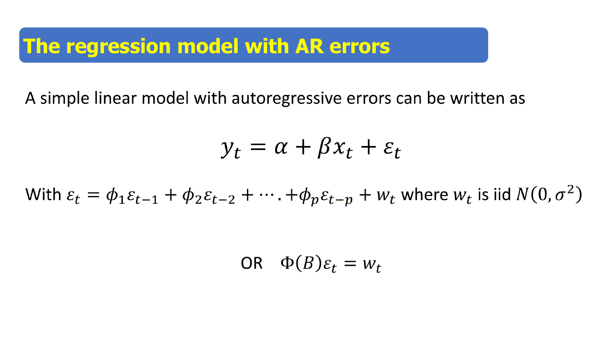


Slide 9 หน้า 17–77 — Multivariate Time Series
ทุกบทก่อนหน้าพยากรณ์ Y จากอดีตของ Y เองเท่านั้น (univariate) แต่ยอดขายขึ้นกับงบโฆษณา และการบริโภคขึ้นกับรายได้ บทนี้เพิ่มตัวแปรอื่นเข้ามา การเลือกโมเดลตามโครงสร้างข้อมูลมีสามแบบ (สไลด์หน้า 50)
เครื่องมือประกอบคือ Granger causality test (X ช่วยพยากรณ์ Y ไหม) และ cross-correlation (X กับ Y สัมพันธ์กันที่ lag ไหน)
เรื่องที่ระบุว่าเกี่ยวกับข้อสอบในบทนี้มีดังนี้
causality() และดูเฉพาะผล Granger3Class 10 สอนจนจบ VAR ในคาบเดียว11 สมัยก่อนสอน GLS ด้วย แต่เทอมนี้ไม่สอน12 และตัวที่น่าจะมีประโยชน์ที่สุดคือ ARIMAX13 หัวข้อของส่วนนี้คือ time series ที่มีตัวแปรอธิบาย (GLS, ARIMAX และ neural network ซึ่งเลื่อนไปคาบหน้า), cross-correlation และ VAR ARIMAX คือ ARIMA with exogenous variable ตัวแปรภายนอกคือตัวแปรที่ใช้อธิบาย Y แต่ไม่ได้ถูกพยากรณ์ในโมเดล ตารางสามแถวในหน้า 50 คือแผนที่ของทั้งวิชา เช่น ยอดขายรายเดือนอย่างเดียวใช้ ARIMA หรือ ETS ยอดขายกับงบโฆษณาที่บริษัทกำหนดเองใช้ ARIMAX (งบโฆษณาไม่ต้องพยากรณ์เพราะรู้ล่วงหน้า) ส่วนราคาหุ้นสี่ตลาดที่ต่างส่งผลต่อกันและต้องพยากรณ์ทุกตัวใช้ VAR14
GLS ไม่ได้สอนในเทอมนี้ แต่สไลด์และโค้ดยังอยู่ และเป็นฐานของ ARIMAX เพราะทั้งสองแก้ปัญหาเดียวกัน คือ regression ที่ error ไม่อิสระกัน ใน regression ทั่วไป (OLS) สมมุติว่า error อิสระกัน แต่เมื่อตัวแปรเป็นอนุกรมเวลา residual มักสัมพันธ์ข้ามเวลา ถ้าไม่สนใจโครงสร้างนี้ ค่าสัมประสิทธิ์และ standard error จะผิด โดยเฉพาะ s.e. ที่ผิดทำให้ t-test และ p-value ผิดไปด้วย โมเดลคือ \(y_t=\alpha+\beta x_t+\varepsilon_t\) และ \(\varepsilon_t=\phi_1\varepsilon_{t-1}+\dots+\phi_p\varepsilon_{t-p}+w_t\) หรือ \(\Phi(B)\varepsilon_t=w_t\) ส่วนแรกคือ regression ปกติ ส่วนที่สองคือ AR ของ error เหมือนที่เรียนใน Lesson 5 แค่ใช้กับ residual แทนข้อมูล ขั้นตอนมีสามขั้น คือทำ OLS แล้วเก็บ residual, ดูว่า residual มีโครงสร้าง AR หรือไม่ด้วย ACF/PACF และถ้ามีให้ประมาณโมเดลที่มี AR error แล้วตรวจความเหมาะสม ในทางปฏิบัติใช้ฟังก์ชัน gls() ของ package nlme ทำครั้งเดียว ข้อมูลตัวอย่าง revenue.txt มี 76 จุดเวลา Y คือ revenue X คือ growth ปัญหาคือ error สัมพันธ์กัน
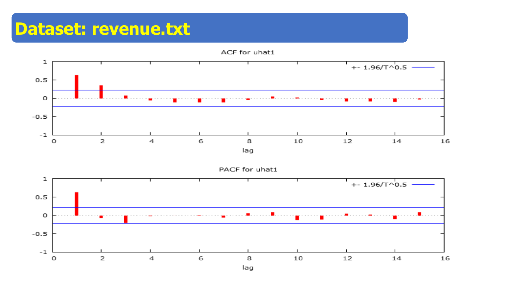
ACF ของ residual ทะลุเส้นที่ lag 1 (ราว 0.6) และ lag 2 แล้วลดลง ส่วน PACF ทะลุแค่ lag 1 จึงเป็น AR(1) ของ error durbinWatsonTest(model) ยืนยัน: autocorrelation lag 1 = 0.636, D-W statistic = 0.695 (ค่าที่ไม่มี autocorrelation คือราว 2) p-value ≈ 0
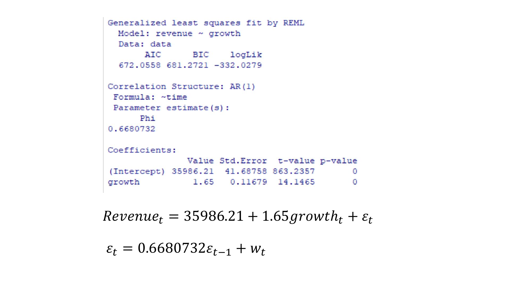
output ของ gls() ให้ทั้งสัมประสิทธิ์ regression และ φ ของ AR(1) ใน error เทียบกับ OLS ได้ดังกล่องข้างล่าง
revenue = 36001.83 + 1.610 growth, s.e. ของ growth = 0.202, t = 7.96
gls(revenue ~ growth, correlation = corAR1(form = ~time)): revenue = 35986.21 + 1.652 growth, s.e. = 0.117, t = 14.15 และ φ = 0.668
\(\mathrm{Revenue}_t=35986.21+1.65\,\mathrm{growth}_t+\varepsilon_t\), \(\varepsilon_t=0.6681\varepsilon_{t-1}+w_t\)
หน้า 26 แนะนำคลิป YouTube สอน GLS ใน R ด้วย nlme ตัวอย่างในคลิปใช้ corAR1(form = ~ year) แบบเดียวกับ revenue โดย form บอกตัวแปรที่เรียงลำดับเวลา


ARIMAX ขยายจาก GLS โดยให้ error เป็น ARIMA ได้ทั้งหมด ไม่ใช่แค่ AR เสนอโดย Tiao และ Box (1981) คือ ARIMA ที่เติมตัวแปรอิสระ r ตัวทางขวามือ \(\Phi(B)(1-B)^dY_t=\theta(B)w_t+\sum_{i=1}^r\alpha_iX_{it}\) บนกระดานเขียนอีกรูปหนึ่งว่า \(y_t=\alpha_0+\sum\alpha_iX_{it}+w_t\) โดย \(w_t\) เป็น ARIMA(p,d,q) และ r คือจำนวนตัวแปรภายนอก ไม่ใช่พารามิเตอร์15 สองรูปนี้ไม่เหมือนกันทุกประการ R (auto.arima(..., xreg = )) ใช้รูปของกระดาน เรียกว่า regression with ARIMA errors ซึ่ง α คือผลของ X ต่อค่าเฉลี่ยของ Y โดยตรง ส่วนรูปบนสไลด์ ผลของ X ส่งต่อไปตามโครงสร้าง AR ด้วย
ขั้นตอนบนสไลด์คือ ตรวจความนิ่งของ Y (difference ถ้าจำเป็น), หา p, q จาก ACF/PACF, ประมาณสัมประสิทธิ์และตรวจ residual, ทำขั้นเดียวกันกับตัวแปร X และใช้ cross-correlation ระหว่าง Y กับ X กำหนดโครงสร้าง lag ปัจจุบัน auto.arima ทำขั้น p, q ให้ ขั้นตอนฉบับภาษาไทย (Wanida Wongwattanabundit) เพิ่มรายละเอียดที่ใช้ได้จริง
ข้อที่ว่าตัวแปรตามต้องไม่ส่งผลย้อนกลับสำคัญ เพราะถ้า Y ส่งผลต่อ X ด้วย X ก็ไม่ใช่ตัวแปรภายนอกจริง ควรใช้ VAR แทน
Granger test ถามว่า "อดีตของ X ช่วยพยากรณ์ Y ได้ดีขึ้นกว่าใช้อดีตของ Y อย่างเดียวหรือไม่" ซึ่งไม่ใช่เหตุเป็นผลในความหมายทางวิทยาศาสตร์ H0: X does not cause Y (No Granger effect) H1: X causes Y16 วิธีทดสอบคือเทียบสอง regression ด้วย F-test Model 1 มี lag ของทั้ง Y และ X ส่วน Model 2 มีแค่ lag ของ Y ถ้า Model 1 ดีขึ้นอย่างมีนัยสำคัญ (p ต่ำ) แปลว่า X มี Granger effect ขั้นที่ 3 บนสไลด์คือทดสอบย้อนทิศ ซึ่งเป็นทางเลือก ข้อความภาษาไทยบนสไลด์ย้ำเงื่อนไขเดิม คือตัวแปรภายนอกต้องไม่ได้รับผลย้อนกลับจากตัวแปรตาม ถ้าเป็นเหตุเป็นผลกันสองทาง ต้องตัดตัวแปรนั้นออกจากตัวเลือกของ ARIMAX การทดสอบนี้จะใช้ใน VAR ด้วย17
ข้อมูลตัวอย่าง uschange คือการเปลี่ยนแปลงเป็นร้อยละรายไตรมาสของการบริโภค รายได้ การผลิต การออม และอัตราว่างงานของสหรัฐฯ 1960–2016 รวม 187 ไตรมาส Y คือ consumption และใช้ income เป็น X ตัวเดียวก่อน18 ไฟล์ uschange.txt ไม่ได้อัปโหลดในโฟลเดอร์ ใช้ fpp2::uschange แทนได้ (ชื่อคอลัมน์ขึ้นต้นด้วยตัวใหญ่)
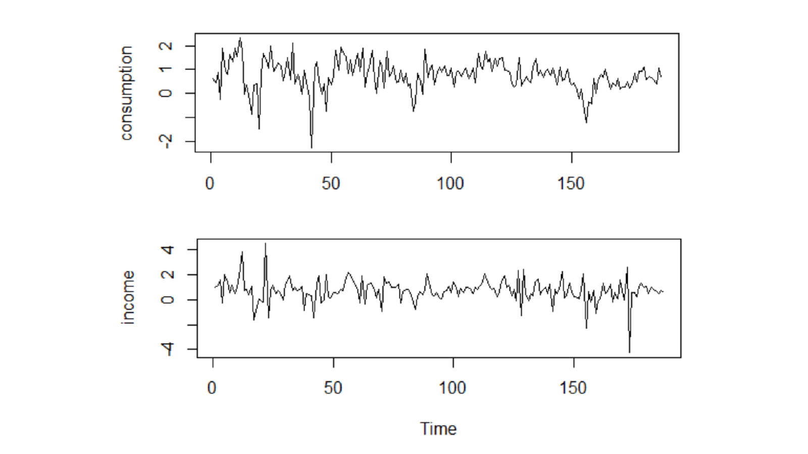
ทั้งสองอนุกรมแกว่งรอบค่าคงที่ ไม่มี trend เพราะเป็นร้อยละการเปลี่ยนแปลงอยู่แล้ว adf.test(consumption) ได้ Dickey-Fuller = −4.53, p = 0.01 จึงนิ่ง ไม่ต้อง difference19 ช่วงประมาณปีที่ 40 (ราวปี 1980) consumption ลดลงแรงถึงราว −2.3 และ income มีค่าสุดโต่งช่วงท้าย
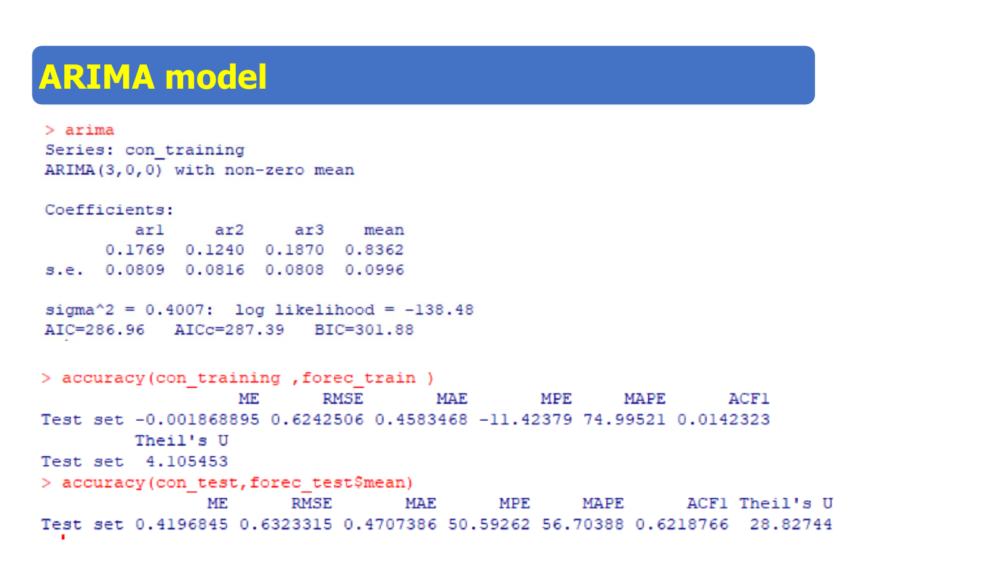
แบ่ง test = 41 ไตรมาสสุดท้าย20 auto.arima กับ training ได้ ARIMA(3,0,0) with non-zero mean: φ = 0.1769, 0.1240, 0.1870, mean = 0.8362, σ² = 0.4007, AICc = 287.39 test RMSE = 0.63221 ค่านี้ใช้เป็นเกณฑ์เทียบกับ ARIMAX
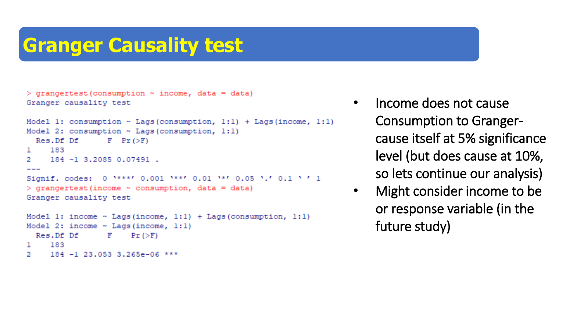
grangertest(consumption ~ income, data = data) ได้ F = 3.21, p = 0.07491 (ใช้ lag 1) ไม่มีนัยสำคัญที่ 0.05 ส่วนทิศกลับ grangertest(income ~ consumption) ได้ F = 23.05, p = 3.3 × 10⁻⁶ แปลว่า consumption ช่วยพยากรณ์ income แต่ income ไม่ช่วยพยากรณ์ consumption ตามเงื่อนไขข้างบน income จึงไม่ควรเป็นตัวแปรภายนอกของ consumption และสไลด์ก็เขียนว่าอาจพิจารณาให้ income เป็นตัวแปรตามในอนาคต22 สไลด์เขียนต่อว่า "but does cause at 10%, so lets continue our analysis" แนวทางนี้ผิด การเปลี่ยน α หลังเห็นผลคือ "การแก้แบบโง่ ๆ" ปัญหาจริงคือเลือก X กับ Y ผิด ต้องเริ่มจาก literature review23 วิทยาศาสตร์ใช้ Design of Experiment ควบคุมปัจจัยได้ แต่ data science และสังคมศาสตร์ต้องพึ่งทฤษฎีจากงานก่อน24 ตัวอย่างนี้จึงทำต่อเพื่อสาธิตโค้ดเท่านั้น

สไลด์เขียนสมการสามบรรทัดจาก output ของ auto.arima ที่มี xreg ขั้นการแปลงอยู่ในกล่องข้างล่าง
auto.arima(con_training, xreg = inc_training): Regression with ARIMA(1,0,2) errors ar1 = 0.5819, ma1 = −0.5345, ma2 = 0.1843, intercept = 0.6168, xreg = 0.2781, σ² = 0.3543, AICc = 270.5
\(\mathrm{consumption}_t=0.6168+0.2781\,\mathrm{income}_t+\varepsilon_t\) "intercept = 0.6168, xreg = slope หน้า income"
\(\varepsilon_t=0.5819\varepsilon_{t-1}-0.5345w_{t-1}+0.1843w_{t-2}+w_t\)
\(w_t\sim N(0,\hat\sigma^2=0.3543)\)
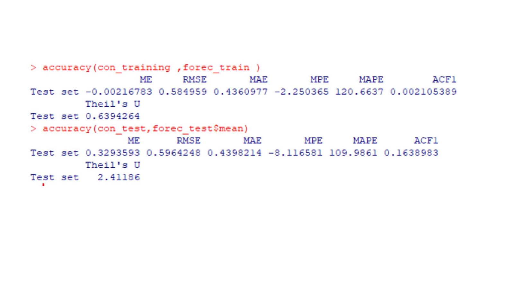
การพยากรณ์ต้องส่ง income ของช่วง test เข้าไปด้วย forecast(arimax, xreg = inc_test)26 test RMSE = 0.596 ต่ำกว่า ARIMA ที่ 0.632 ราว 0.0427 อีกวิธีเทียบคือ F-test แบบเอา X ออก28 ในงานจริง ARIMAX ใช้พยากรณ์ได้เมื่อรู้ X ของอนาคต เช่น งบโฆษณาที่วางแผนไว้แล้ว ถ้าต้องพยากรณ์ X ด้วยก็ควรใช้ VAR
ระวังลำดับอาร์กิวเมนต์ของ accuracy() โค้ดเรียก accuracy(con_test, forec_test$mean) แต่ forecast::accuracy() รับค่าพยากรณ์ก่อน ค่าจริงทีหลัง ผลจึงกลับเครื่องหมายของ ME และ MPE output ได้ ME = +0.4197 (ARIMA) และ +0.3294 (ARIMAX) ถ้าเรียกถูกลำดับ accuracy(forec_test$mean, con_test) จะได้ −0.4197 และ −0.3294 ส่วน RMSE และ MAE เท่ากันทั้งสองแบบ MAPE ก็เปลี่ยนเพราะหารด้วยค่าคนละชุด เป็นกับดักเดียวกับที่พบใน Lesson 2
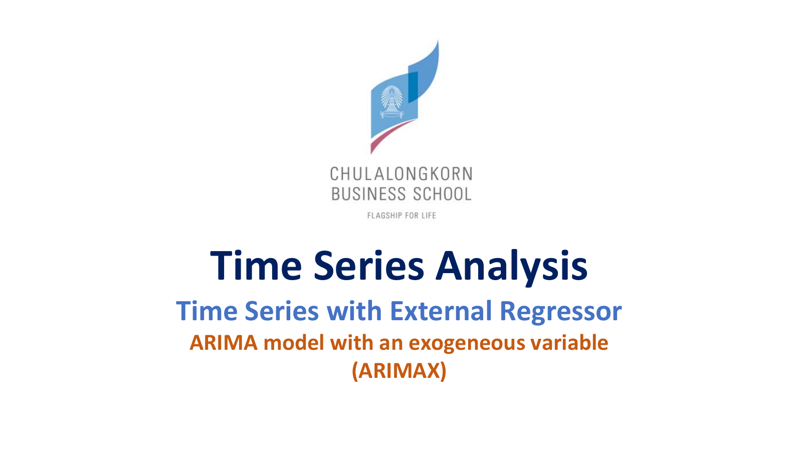
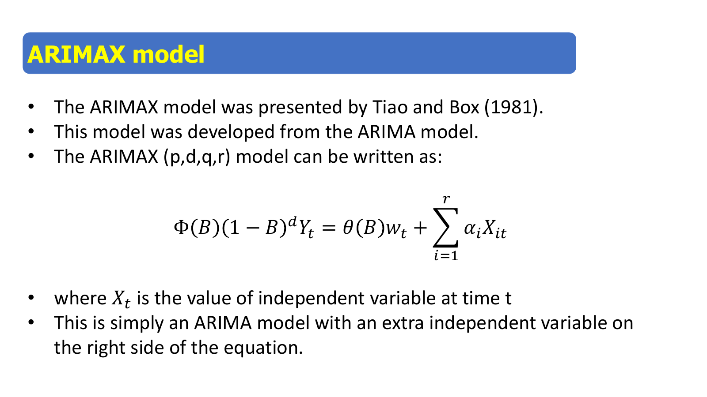


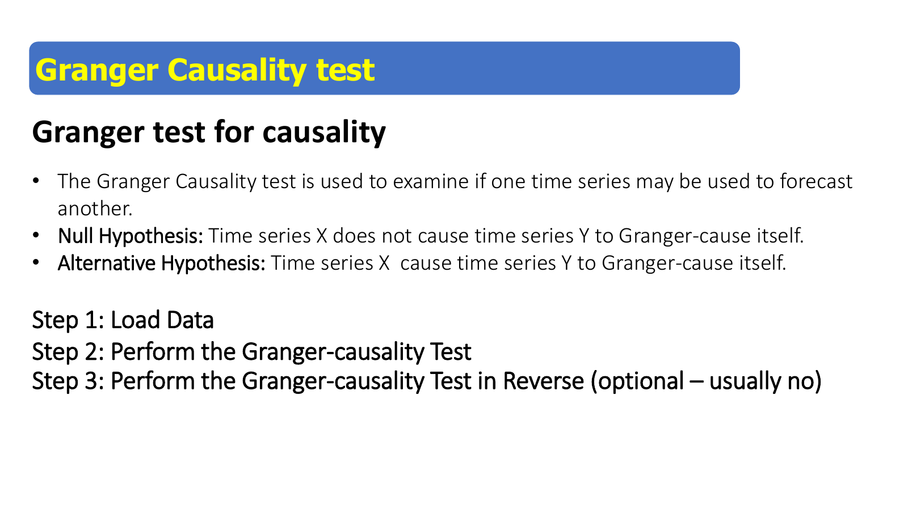
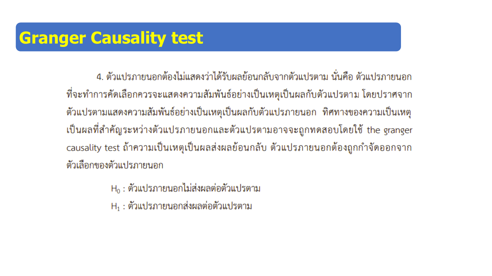

MIDAS (Mixed Data Sampling) มีเฉพาะแนวคิด ไม่มีโค้ดและไม่ได้ลงรายละเอียดในคลิป ใช้เมื่อ Y กับ X เก็บด้วยความถี่ต่างกัน เช่น GDP รายไตรมาส (ความถี่ต่ำ) กับดัชนีราคาหุ้นรายวันหรือยอดค้าปลีกรายเดือน (ความถี่สูง) แทนที่จะเฉลี่ย X รายเดือนสามเดือนให้เป็นรายไตรมาสแล้วเสียข้อมูล MIDAS ใช้ค่าปัจจุบันและค่าล่าช้าของ X ความถี่สูงทั้งหมดเป็นตัวอธิบาย จึงเป็น autoregressive distributed lag แบบทั่วไป เช่น ไตรมาสหนึ่งมีสามเดือน X ในไตรมาสนั้นจึงมีสามค่าที่แต่ละค่ามีน้ำหนักของตัวเอง
autocorrelation วัดความสัมพันธ์ของอนุกรมกับอดีตของตัวเอง cross-correlation ขยายไปวัดความสัมพันธ์ของสองอนุกรมที่ lag ต่าง ๆ มันเป็นแค่เครื่องมือสำรวจข้อมูล ไม่ใช่โมเดลหลัก29 ใช้ช่วยตัดสินว่าควรใส่ X ที่ lag ไหน cross-correlation ระหว่าง \(X_{t1}\) และ \(X_{t2}\) ที่ lag k คือ correlation ของ \(X_{t+k,1}\) กับ \(X_{t2}\)
\(\hat\rho_{12}(k)=\dfrac{\sum_{t=1}^{n-k}(X_{t+k,1}-\bar X_1)(X_{t2}-\bar X_2)}{\sqrt{\sum(X_{t1}-\bar X_1)^2}\sqrt{\sum(X_{t2}-\bar X_2)^2}}\)
จุดต่างสำคัญจาก ACF คือ ACF ที่ lag k กับ −k เท่ากัน แต่ CCF ไม่เท่า เพราะลำดับของอนุกรมมีผล30 k = 0 คือ Pearson correlation ของคู่เวลาเดียวกัน k = 2 จับคู่ \((X_{31},X_{12}),(X_{41},X_{22}),\dots\) คือตัวแปร 1 ในอนาคตสองช่วงกับตัวแปร 2 ปัจจุบัน k = −2 จับคู่ \((X_{11},X_{32}),\dots\) คือตัวแปร 1 ปัจจุบันกับตัวแปร 2 ในอนาคตสองช่วง หรือมองกลับว่าตัวแปร 1 นำตัวแปร 2 อยู่สองช่วง cross correlogram วาดเหมือน ACF แต่แกนนอนมีทั้ง lag ลบและบวก ความสูงของแท่งบอกความแรงของ cross-correlation ใน R ใช้ ccf(x, y) ซึ่งค่าที่ lag k คือ cor(x[t+k], y[t]) ดังนั้น lag ลบหมายถึง x ในอดีตเทียบกับ y ปัจจุบัน ข้อมูลตัวอย่าง Bsales มี 100 สัปดาห์ สี่ตัวแปร คือ sales (พันดอลลาร์, ตัวแปรตอบสนอง), ad_tv, ad_online (พันดอลลาร์) และ discount (ร้อยละ)
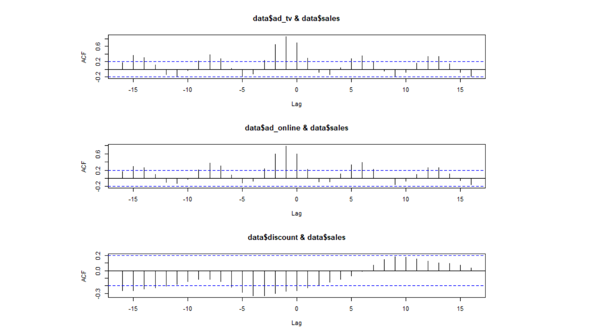
ccf(data$ad_tv, data$sales) มีค่าสูงสุดที่ lag −1 = 0.848 รองลงมาคือ lag 0 = 0.695 และ lag −2 = 0.641 ad_online มีรูปแบบเดียวกัน สูงสุดที่ lag −1 = 0.788 ส่วน discount ค่าสัมบูรณ์สูงสุดเพียง 0.333 และไม่มีแท่งเด่นที่ lag ใด31

lag −1 ของ ccf(ad_tv, sales) หมายถึง ad_tv ที่เวลา t − 1 กับ sales ที่เวลา t ข้อสรุปคือยอดขายสัมพันธ์กับโฆษณาของสัปดาห์ก่อนมากที่สุด (ρ ≈ 0.8) ซึ่งสมเหตุสมผลเพราะลูกค้าต้องใช้เวลาตัดสินใจหลังเห็นโฆษณา ถ้าจะทำ ARIMAX จึงควรใส่ ad_tv ที่ lag 1 เป็นตัวอธิบาย ส่วนส่วนลดไม่มีความสัมพันธ์แบบล่าช้าที่ชัดเจน32
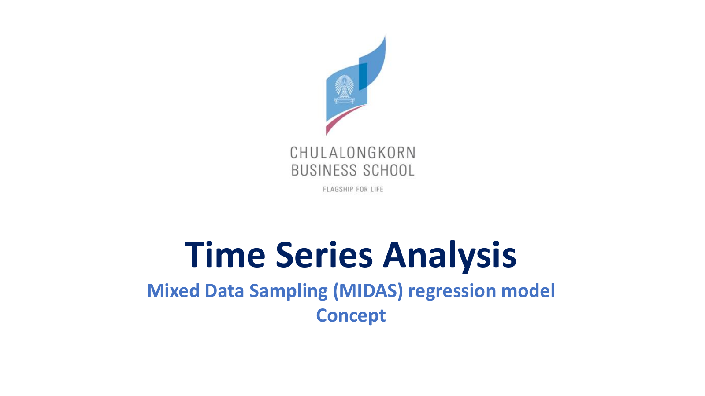


VAR คือ "simultaneous model"33 ทุกตัวแปรถูกพยากรณ์พร้อมกัน และทุกตัวใช้ lag ของตัวเองและของตัวอื่นเป็นตัวอธิบาย ใช้เมื่อตัวแปรตั้งแต่สองตัวสัมพันธ์กัน และรวมกันอธิบายได้มากกว่าตัวเดียว เป้าหมายคือศึกษาความสัมพันธ์ระหว่างทุกตัวแปรเพื่อพยากรณ์ให้ดีขึ้น และเพราะ VAR ไม่แยกตัวแปรตามกับตัวแปรอิสระ จึงพยากรณ์ทุกตัวพร้อมกัน ต่างจาก ARIMAX ที่ต้องรู้ X ของอนาคต VAR(1) สองตัวแปรเขียนได้ว่า
\(X_{t1}=\phi_{11}X_{t-1,1}+\phi_{12}X_{t-1,2}+w_{t1}\)
\(X_{t2}=\phi_{21}X_{t-1,1}+\phi_{22}X_{t-1,2}+w_{t2}\)
แต่ละสมการคือ AR(1) ของตัวเองบวก lag 1 ของอีกตัว VAR ที่เรียนมีแค่ AR term ไม่มี MA34 เช่น ถ้า φ₁₂ = 0.5 การโฆษณาสัปดาห์ก่อนเพิ่ม 1 หน่วยทำให้ยอดขายสัปดาห์นี้เพิ่ม 0.5 หน่วย เขียนเป็นเมทริกซ์ได้ \(\mathbf X_t=\mathbf\Phi\mathbf X_{t-1}+\mathbf W_t\) โดย Φ เป็นเมทริกซ์ 2 × 2 และ error มี covariance matrix ที่มี Var(w₁), Var(w₂) และ Cov(w₁, w₂)35 เมื่อ p หรือจำนวนตัวแปรเพิ่ม การเขียนแบบเต็มจะยาวมาก
k ตัวแปร VAR(p) มี k สมการ แต่ละสมการมี φ จำนวน p × k ตัว (p lag ของทุกตัวแปร) ถ้ามีค่าคงที่ (type = "const") บวกอีก 1 ต่อสมการ
VAR(1): 2 ต่อสมการ รวม 4 · VAR(2): 4 ต่อสมการ รวม 8 · VAR(3): 6 ต่อสมการ รวม 12
9 × 4 = 36 ต่อสมการ รวม 144 φ
5 × 2 + 1 = 11 ต่อสมการ ข้อมูลที่ใช้ได้มีแค่ 20 − 5 = 15 แถว เหลือ df = 15 − 11 = 4 ซึ่งตรงกับ "on 4 degrees of freedom" ใน output
การเลือก p ทำโดยคำนวณ information criterion สี่ตัวสำหรับหลาย p แล้วเลือกค่าต่ำสุด ได้แก่ AIC, HQ (Hannan-Quinn), SC (Schwarz ซึ่งก็คือ BIC)37 และ FPE (final prediction error) สี่เกณฑ์อาจให้ p ต่างกันมาก "Results might vary hugely" ฟังก์ชันคือ VARselect() จาก package vars ข้อมูลชุดแรก var1 เป็นข้อมูลจำลองที่ออกแบบให้เห็นโครงสร้างของ VAR ชัด ๆ
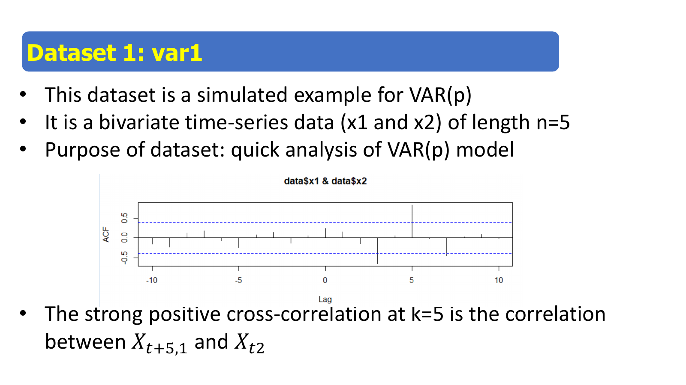
ไฟล์มี 25 แถว โค้ดใช้ 20 แถวแรก (สไลด์เขียนว่า length n = 5 ซึ่งน่าจะพิมพ์ผิด) ccf(data$x1, data$x2) มีค่าสูงสุดที่ lag 5 = 0.835 คือ correlation ของ \(X_{t+5,1}\) กับ \(X_{t2}\) หรือ x2 นำ x1 อยู่ 5 ช่วง จึงคาดได้ว่าในสมการของ x1 สัมประสิทธิ์หน้า lag 5 ของ x2 จะมีนัยสำคัญ38
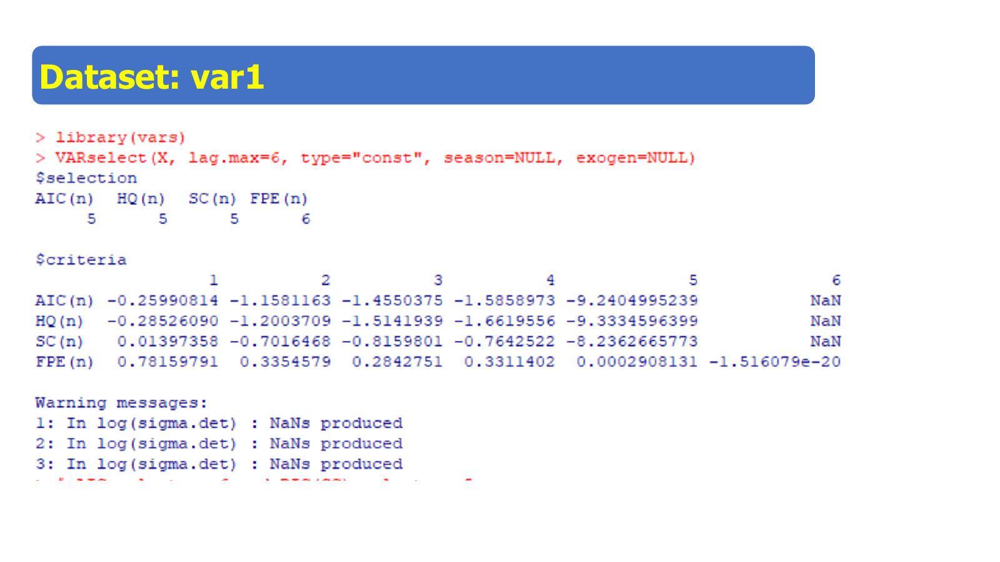
บนสไลด์ได้ AIC = 5, HQ = 5, SC = 5, FPE = 639 แถว lag 6 ของ criteria เป็น NaN เพราะข้อมูลแค่ 20 แถวไม่พอประมาณ VAR(6) ที่มีพารามิเตอร์ 13 ตัวต่อสมการ เมื่อรันด้วย vars เวอร์ชันปัจจุบันได้ 6 ทุกเกณฑ์ เพราะวิธีจัดการ NaN ต่างกัน p = 5 สอดคล้องกับ CCF จึงเลือก VAR(5) อาร์กิวเมนต์ type มีสามแบบ "none" มีแต่ φ, "const" มี intercept และ "both" มี intercept และ trend40 และขั้นแรกต้องเช็คความนิ่งก่อน

VAR(X, p = 5, type = "const") สมการ x1 ได้ x2.l5 = 2.0046 (s.e. 0.0170, t = 117.9, p = 3.1 × 10⁻⁸) ตัวอื่นไม่มีนัยสำคัญ const = −0.0001641 จึงสรุปได้ว่า \(x_{1,t}\approx2x_{2,t-5}\) ข้อมูลถูกสร้างมาแบบนี้ R² = 1 ด้วยเหตุนี้

สมการ x2 ได้ const = 0.41631, x1.l1 = −0.19529 ไม่มีตัวไหนมีนัยสำคัญ (adjusted R² = 0.095, F p = 0.486) x2 จึงแทบเป็น noise ที่ไม่ขึ้นกับอดีต การพยากรณ์ predict(fit, n.ahead = 5) ให้ fcst, lower, upper แยกแต่ละตัวแปร42 x1 ห้าก้าวถัดไปคือ 0.231, −1.905, 0.452, 3.613, −0.009 ซึ่งคือสองเท่าของ x2 ที่สังเกตแล้วเมื่อ 5 ช่วงก่อน จึงพยากรณ์ได้แม่นแม้ x2 จะเดาไม่ได้

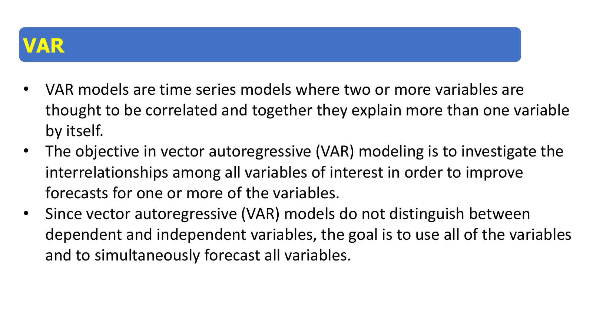


ความนิ่งเป็นเงื่อนไขของ VAR ขั้นแรกจึงตรวจ ADF ของทุกคอลัมน์แยกกัน ถ้าไม่นิ่งให้ difference ใช้ apply(data, 2, adf.test) โดย 2 คือทำทีละคอลัมน์43 นอกจากนั้นตัวแปรใน VAR ต้องเป็น endogenous คือส่งผลต่อกัน เป็นตัวเลขต่อเนื่อง และแต่ละตัวเป็นฟังก์ชันเชิงเส้นของ lag ของตัวเองและตัวอื่น ถ้ามีตัวแปรที่ไม่ได้รับผลจากตัวอื่นเลย ควรใช้เป็น exogenous แบบ ARIMAX ข้อมูลชุดที่สองคือ EuStockMarkets ซึ่งอยู่ใน base R เป็นราคาปิดรายวันของดัชนีเยอรมนี (DAX), สวิตเซอร์แลนด์ (SMI), ฝรั่งเศส (CAC) และอังกฤษ (FTSE) เฉพาะวันทำการ 1,860 วัน สี่ตัวแปร

ทั้งสี่ดัชนีมี trend ขาขึ้นชัดเจน โดยเฉพาะช่วง 1997–1998 ADF ของราคาได้ DAX p = 0.96, SMI p = 0.98, CAC p = 0.99, FTSE p = 0.59 ไม่นิ่งทั้งหมด (H0 ของ ADF คือไม่นิ่ง) จึงใช้ stnry = diff(EuStockMarkets) แล้ว ADF ทุกตัวได้ p = 0.0144 VARselect(type = "none", lag.max = 10) ได้ AIC = 9, HQ = 1, SC = 1, FPE = 9 สไลด์เลือก p = 9 เพราะ AIC "is the most popular one"
หลังฟิตต้องตรวจสองเรื่อง เรื่องแรกคือ diagnostic วัดว่าโมเดลจับ pattern ไปได้แค่ไหนด้วยการดูว่า residual เป็น random หรือไม่ ใช้ Box-Pierce หรือ Ljung-Box แบบหลายตัวแปร เรียกรวมว่า portmanteau test H0 คือ residual เป็นอิสระ ใน R ใช้ serial.test() เรื่องที่สองคือ Granger ใน VAR ใช้ตรวจว่ามีตัวแปรที่ไม่มีอิทธิพลต่อตัวอื่น ซึ่งตัดออกได้เพื่อลด overfitting ทำกับทุกตัวแปร R ให้สองผล คือ Granger และ Instant ให้ดู Granger ถ้า p > 0.05 อาจตัดตัวแปรนั้น45

vars::VAR(stnry, lag.max = 10, ic = "AIC", type = "none") เลือก p = 9 ได้ 36 สัมประสิทธิ์ต่อสมการ รวม 144 ตัว ใช้ type = "none" เพราะผลต่างของราคามี mean ใกล้ศูนย์

correlation ของ residual ระหว่างดัชนีสูง (DAX กับ SMI 0.749, DAX กับ CAC 0.743) แปลว่า shock ในวันเดียวกันเกิดพร้อมกันทั้งยุโรป ส่วน serial.test ได้ Chi-squared = 183.36, df = 112, p = 2.4 × 10⁻⁵ จึง reject H0 residual ยังมี autocorrelation เหลือ อาจต้องเปลี่ยน p46 df = 112 มาจาก k²(h − p) = 16 × (16 − 9) เมื่อใช้ lag 16 ในการทดสอบ ในคลิปช่วงหนึ่งพูดว่า "อยากให้ p-value ต่ำ ๆ" ซึ่งขัดกับ H0 แล้วสรุปถูกว่า p ต่ำคือไม่ผ่าน ทางเลือกเมื่อ residual ยังสัมพันธ์คือเปลี่ยน p, เปลี่ยน type, difference ครั้งที่สอง หรือ take log ของข้อมูล (ราคาหุ้นมักใช้ผลต่างของ log คือผลตอบแทน) สไลด์ตัดสินใจใช้ VAR(9) ต่อ และการบ้านคือลอง p = 147

ผล Granger ของแต่ละดัชนี (H0: ดัชนีนั้นไม่ Granger-cause อีกสามตัว) คือ DAX F = 1.73, p = 0.0107; SMI F = 2.65, p = 7.1 × 10⁻⁶; CAC F = 1.85, p = 0.0046; FTSE F = 1.94, p = 0.0024 ทุกตัวมีนัยสำคัญ จึงไม่ตัดตัวไหน48 df1 = 27 คือ 9 lag × 3 ตัวแปรอื่น ส่วน $Instant ของ SMI ได้ χ² = 686.75 ซึ่งสะท้อน correlation ของ residual ในวันเดียวกันที่เห็นในหน้าก่อน พยากรณ์ predict(var.a, n.ahead = 25) ได้สี่ดัชนีพร้อมกัน แต่เป็นค่าของผลต่าง ต้อง undifference เอง49


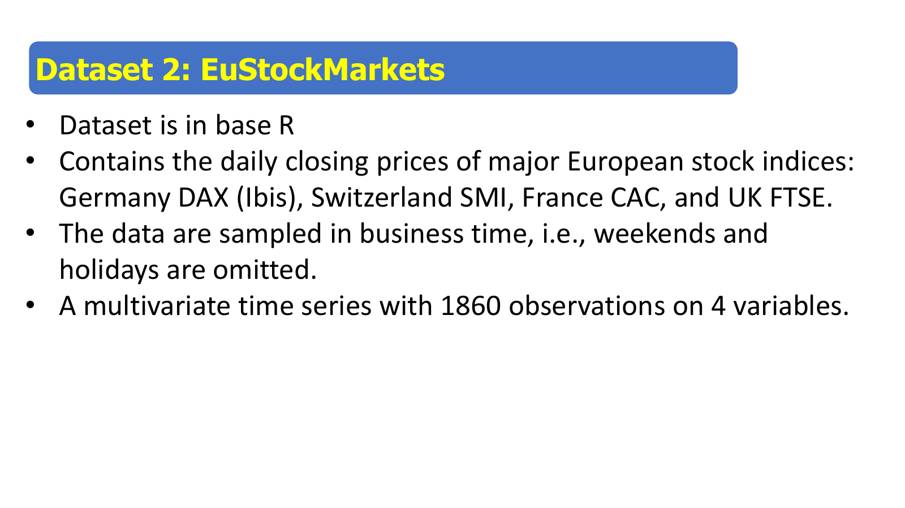


ชุดสุดท้ายแสดง VAR ที่มีทั้ง trend และ seasonal โดยไม่ difference cardiac จาก package tswge คืออัตราการเสียชีวิตจากโรคหัวใจ (cmort), อุณหภูมิ (tempr) และมลพิษอนุภาค (part) รายสัปดาห์ 1970–1979 รวม 508 สัปดาห์ มี trend และ seasonal 52 สัปดาห์50 season = 52 สร้าง dummy 51 ตัว (sd1–sd51) สัปดาห์สุดท้ายคือ dummy ทุกตัวเป็น 0 เพราะถ้าใช้ 52 ตัวจะเกิด linear dependence กับค่าคงที่51 และ type = "both" ใส่ intercept กับ slope × t แทนการ difference52

output แสดงสัมประสิทธิ์ของสมการ cmort ทั้งหมด ส่วนที่ไฮไลต์คือค่าคงที่และ trend ที่มาจาก type = "both" การเขียนเป็นสมการอยู่ในกล่องข้างล่าง
const = 55.334, trend = −0.01462 ต่อสัปดาห์ (อัตราเสียชีวิตลดลงช้า ๆ)
cmort.l1 = 0.2623, tempr.l1 = −0.1252, part.l1 = −0.0486
cmort.l2 = 0.3330, tempr.l2 = −0.0437, part.l2 = −0.0203
\(\mathrm{cmort}_t=55.334-0.0146t+0.2623\,\mathrm{cmort}_{t-1}-0.1252\,\mathrm{tempr}_{t-1}-0.0486\,\mathrm{part}_{t-1}+0.3330\,\mathrm{cmort}_{t-2}-0.0437\,\mathrm{tempr}_{t-2}-0.0203\,\mathrm{part}_{t-2}-4.378\,sd_1-2.528\,sd_2-\dots-0.669\,sd_{51}+w_t\)

แบบมี seasonal dummy ได้ AIC = 5, HQ = 2, SC = 2, FPE = 5 แบบไม่มีได้ 9, 5, 2, 9 สไลด์เลือก VAR(2) และ VAR(9) และเพิ่ม VAR(7) เพราะ CCF บอกว่า cmort สัมพันธ์กับ part ที่ lag 7 สัปดาห์55 แบ่ง train ถึงสัปดาห์ที่ 40 ของปี 1978 (456 สัปดาห์) และ test 52 สัปดาห์ถัดไป Ljung-Box ของ residual cmort ได้ p = 0.087 (p = 2), 0.055 (p = 9), 0.011 (p = 7) VAR(7) แบบมี seasonal จึงไม่ผ่าน

RMSE ของ cmort ใน test 52 สัปดาห์ (คำนวณเฉพาะตัวแปรที่สนใจ) คือ VAR(2) = 6.35, VAR(9) = 6.44, VAR(7) = 6.41 VAR(2) ดีที่สุดเล็กน้อย ตรงกับที่รันได้ทุกค่า

เมื่อตัด seasonal dummy ได้ VAR(2) = 5.92, VAR(9) = 6.08, VAR(7) = 5.44 ดีกว่าทุกโมเดลแบบมี seasonal และ VAR(7) ดีที่สุด แปลว่า lag 7 ของมลพิษช่วยพยากรณ์จริง และ dummy 51 ตัวต่อสมการอาจทำให้ overfit
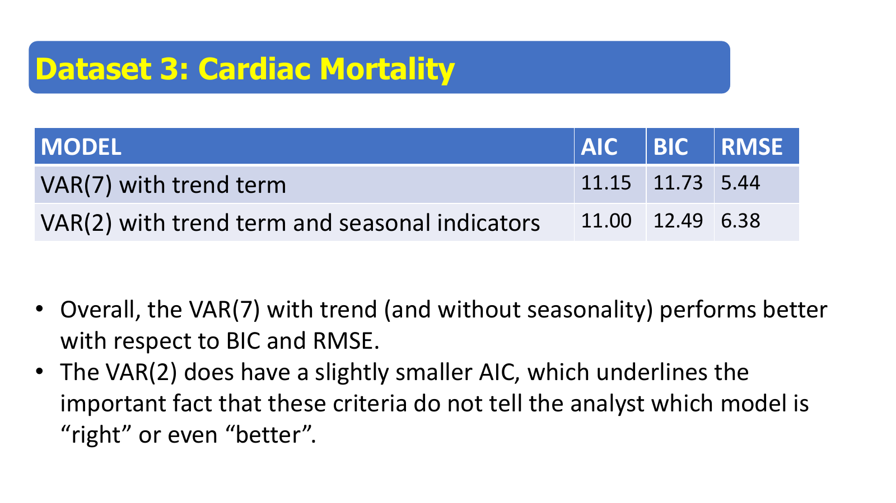
VAR(7) with trend ได้ AIC 11.15, BIC 11.73, RMSE 5.44 ส่วน VAR(2) with trend + seasonal ได้ AIC 11.00, BIC 12.49, RMSE 6.38 VAR(7) ดีกว่าทั้ง BIC และ RMSE แต่ VAR(2) มี AIC ต่ำกว่าเล็กน้อย สไลด์สรุปว่า these criteria do not tell the analyst which model is “right” or even “better”. AIC ใช้เทียบ VAR ด้วยกันได้ "ระดับหนึ่ง" แต่ห้ามเทียบข้ามตระกูล56 RMSE ของ VAR(2) ในตารางนี้คือ 6.38 ต่างจาก 6.35 ในหน้า 75 เล็กน้อย น่าจะมาจากการรันคนละครั้ง
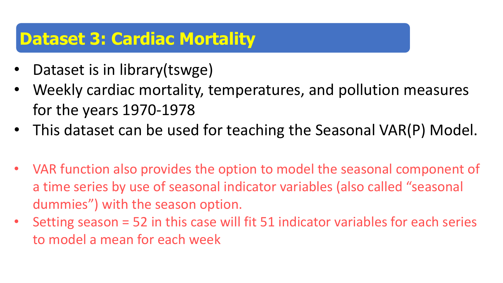
ไฟล์ R_codes.txt, revenue.txt, Bsales.txt และ var1.txt อยู่ในโฟลเดอร์ CLASS 10 ใช้ package forecast, tseries, lmtest, vars, nlme, car และ tswge ส่วน uschange ใช้ fpp2::uschange ลองฝึกต่อในแบบฝึก Lesson 11 หรือกลับไปที่สารบัญ
ตัวเลขยกในเนื้อหาชี้มาที่รายการนี้ แต่ละรายการระบุคลาสและนาทีของคลิป พร้อมถ้อยคำในคลิปเมื่อมี
| หน้า | เนื้อหา | อยู่ในตอน |
|---|---|---|
| 1–16 | auto.arima, ETS, tsCV | etc — สอนใน Lesson 10 |
| 17–26 | Multivariate time series, GLS และ revenue | ตอน 1 |
| 27–39 | ARIMAX และขั้นตอน, Granger, uschange | ตอน 2 |
| 40–48 | MIDAS, cross-correlation และ Bsales | ตอน 3 |
| 49 | VAR (หน้าคั่น) | ตอน 4 |
| 50 | เลือกโมเดลตามโครงสร้าง | ตอน 1 |
| 51–59 | VAR, VAR(1), การเลือก p, var1 | ตอน 4 |
| 60–70 | เงื่อนไข VAR และ EuStockMarkets | ตอน 5 |
| 71–77 | Cardiac Mortality | ตอน 6 |
แหล่งอื่นที่ใช้: Class 10 ช่วง 0:00–2:13 (ตอน 1–6), ไฟล์ R_codes.txt, revenue.txt, Bsales.txt และ var1.txt (CLASS 10), fpp2::uschange, tswge::cardiac